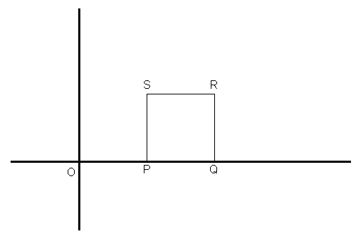

On the coordinate plane a "unit square" is drawn with the following vertices: P(1, 0), Q(2, 0), R(2, 1) and S(1, 1). See drawing.

A line is drawn from the origin that cuts the square into two sections, one larger than the other. The ratio of the areas of the upper section to the lower is 2:1.
Determine the equation of the "cutting" line.
Extensions to the problem:
- Change the ratio, as 3:1, 4:1, etc.
- Move the square to the right (or left) a given number of units.
- Expand (or shrink) the size of the square, e.g. use these vertices: P(1, 0), Q(3, 0), R(3, 2) and S(1, 2).
- Position the square somewhere in the "middle" of the quadrant, i.e. so that it does not touch either axis.
- Do any 2 or more of the above transformations at the same time.
- Consider the possibility that the line might be a curved line, such as the quadratic form of y = ax2.
- What would happen if we replaced the square with a rectangle? Or some other quadrilateral?